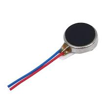

New and updated parts list for Sense-Aid
| Part | Image | Description | Price | Quantity |
|---|---|---|---|---|
| ESP32-WROOM-32 | |
ESP32 is a series of low-cost, low-power system-on-chip microcontrollers with integrated Wi-Fi and dual-mode Bluetooth. | Rs. 300 / piece | 3 |
| ESP32 CAM Module | |
ESP32 Cam - used to capture live video for object detection and object tracking the video using AI | Rs. 900 / piece + Rs. 200 (FTDI to upload code) | 1 |
| UltraSonic Sensors | UltraSonic sensor uses ultrasound of frequency 40kHz to find the distance between 2 points | Rs. 60 / piece | 3 | |
| VL53L0X Time of Flight Sensor | |
VL53L0X is a low cost laser based Time of Flight sensor that uses laser to accurately give the distance between 2 object, except in front of a mirror / any media change | Rs. 150 / piece | 1 |
| SG90 Servo Motor | Servo motors will be used to rotated the UltraSonic sensors and the camera to required angles | Rs. 70 / piece | 4 | |
| Vibration Motor |  | Used to produce vibrations, in this case, used to used to warn the user about obstacles | Rs. 50 / piece | 3 |
| 10k mAh power bank | |
Used to power this entire setup | IDK, Rs. 100 / piece | 2 |
| 5w LED Bulb | Used for vision of camera during night | Rs. 50 / piece | 1 |